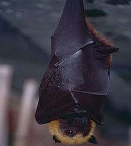

Pteropus Rufus


Pteropus rufus, Renard volant Malgache, plus connu à Madagascar sous le nom de Fanihy, est une espèce de chauve-souris endémique de Madagascar.
Le Fanihy se localise en général dans les zones côtieres à basse altitude. Cet animal fait partie de l’une des chauves-souris les plus grande du monde car en effet, le corps de l’animal mesure 25cm avec une envergure de 0.9 à 1m. Le Fanihy se caractérise par son pelage brun foncé pour la partie supérieure, et un pelage roux pour la partie inférieur, le cou et le dessus de la tête; l’autre particularité de l’animal c’est qu’il ne possède pas de queue...